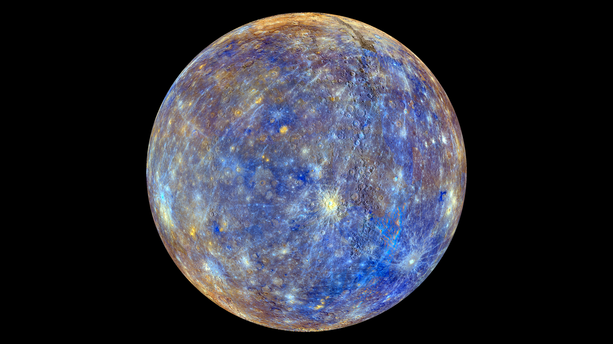

The Planets
Eight worlds, billions of kilometres of space, and a whole lot of weirdness. Let's dig in.
Explore each planet
Mercury – The Speedy One
First planet from the Sun. Tiny, cratered, and absolutely scorching.
Mercury is the smallest planet in the solar system and the closest to the Sun, but it's not the hottest — that's Venus. Because Mercury has almost no atmosphere, it can't trap heat. Temperatures swing wildly: up to 430°C during the day and plummeting to −180°C at night.
Mercury orbits the Sun faster than any other planet — it completes one orbit in just 88 Earth days. But a day on Mercury (one full rotation) takes 59 Earth days. So a Mercury year is only about 1.5 Mercury days long. Completely bizarre.
| Property | Value |
|---|---|
| Distance from Sun | 57.9 million km (avg) |
| Diameter | 4,879 km |
| Day length | 59 Earth days |
| Year length | 88 Earth days |
| Moons | 0 |
| Surface temp range | −180°C to 430°C |


How big are the planets, really?
Select two planets to compare their sizes. The circles below are roughly to scale relative to each other.
What would you weigh on other planets?
Gravity varies massively across the solar system. Type your weight on Earth and find out.
Enter your weight then hit Calculate.